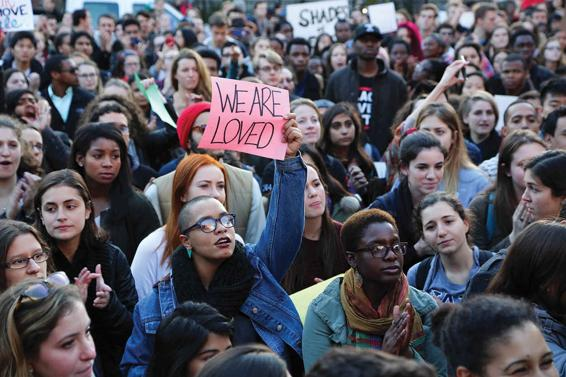
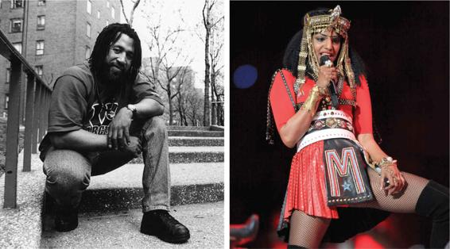

Contemporary Industrial Societies: Cultural Conformity or Diversity?
The study of cultural differences highlights the influence of cultural learning on behavior, which can vary widely from culture to culture. For example, in the United States, we eat oysters but not kittens or puppies, both of which are regarded as delicacies in other parts of the world. Westerners regard kissing as a normal part of sexual behavior, but in other cultures, the practice is either unknown or regarded as disgusting.
Cultural Conformity
All cultures serve as an important source of conformity. For example, when you say that you subscribe to a particular value, you are probably voicing the beliefs of your family members, friends, teachers, or others who are significant in your life. When you choose a word to describe some personal experience, that word acquires its meaning in a language you learned from others.
American high school and college students often see themselves as especially nonconformist. Like the body piercers and tattooists of today, the hippies of the 1960s and the punks of the 1980s all sported distinctive clothing styles, haircuts, and other forms of bodily adornment. Yet how individualistic were they? Were their styles actually “uniforms,” just as navy blue suits or basic black are “uniforms” among conservative businesspeople?
There is, in fact, an aspect of conformity to their behavior—conformity to their own group. When you buy a seemingly unique article of clothing to express your individuality, that garment was likely created by the design department of a global manufacturer that studied the current tastes of consumers and then ordered the mass production of your “unique” garment. When you listen to music, it is most likely the same kind that your friends listen to.
One of the challenges for all cultures is to instill in people a willingness to conform. Encouraging conformity is accomplished in two ways (Parsons, 1964; orig. 1951). First, members learn the norms of their culture starting from childhood, with parents playing a key role. When learning is successful, the ingrained norms become unquestioned ways of thinking and acting; they appear “normal.” (Note the similarity between the words norm and normal; they share a common root.) Second, social control comes into play when a person fails to conform adequately to a culture’s norms. Social control often involves informal punishment, such as rebuking friends for minor breaches of etiquette, gossiping behind their backs, or ostracizing them from the group. Formal forms of discipline might range from parking tickets to imprisonment (Foucault, 1975). Émile Durkheim argued that punishment not only helps guarantee conformity among those who would violate a culture’s norms and values but also vividly reminds others what the norms and values are.
Cultures differ, however, in how much they value conformity. Research shows that Chinese culture lies at one extreme in terms of valuing conformity (Hofstede, 1997; Minkov and Hofstede, 2012), while at the other extreme lies American culture, ranking among the world’s highest in cherishing individualism. Americans pride themselves on their independence of spirit, represented by the lone bald eagle, the U.S. national symbol. Globalization—from Starbucks and McDonald’s to the widespread use of the Internet and smartphones—is exposing many young Chinese to more individualistic Western values.
On the left, members of a 1970s commune relax outdoors. On the right, punks hang out on a street corner in the 1980s. Though their distinctive styles set them apart from mainstream society, these people are not as nonconformist as they may think they are. Both subcultures pictured here conform to the norms of their respective social groups.
Cultural Appropriation
Cultural appropriation occurs when members of one cultural group borrow elements of another’s culture, such as when a person who is not an American Indian dons a feathered headdress on Halloween or when a non-Japanese person wears a kimono. Rock music became popular when White musicians—from Elvis Presley to the Rolling Stones—drew on African American blues and gospel, appropriating key musical elements that were then introduced to largely White audiences in Europe and the United States. While the history of music, art, and even language shows that cultural appropriation is widespread, sociologists have raised the question: When is it offensive to take on elements of a culture to which you don’t belong? Sometimes even the most well-intentioned and seemingly benign decisions to borrow the cultural style of another group can be understood quite differently by those who come from that culture.
Controversy abounded at Yale when an instructor publicly questioned the validity of an email from administrators with proposed guidelines for Halloween costumes.
Sociologist George Lipsitz (1997) has argued that when a majority or dominant culture appropriates elements of a minority culture, particularly one that has historically suffered oppression at the hands of the majority, it is especially important that those doing the appropriation be extremely sensitive to the historical meaning and contemporary significance of the cultural forms being appropriated. In October 2015, the campus of Yale University broke out in controversy over a series of emails written by administrators about Halloween. The uproar began when the college’s Intercultural Affairs Committee sent an email advising students to avoid costumes that “threaten our sense of community or disrespect, alienate or ridicule segments of our population based on race, nationality, religious belief or gender expression.” A few days later, a Yale instructor and wife of the deputy director of one of the college’s dorms wrote a pointed response that questioned whether it was appropriate for college administrators to police the costumes of young adults. In an email to the dorm residents, she asked, “Is there no room anymore for a child or young person to be a little bit obnoxious, a little bit inappropriate or provocative, or yes, offensive?” This email set in motion a series of protests, with many students calling for her resignation. Many felt that she was dismissing the power of harmful stereotypes to further degrade marginalized groups. Ultimately, in early 2016, the instructor and her husband stepped down from their posts in residential life.
Although no hard-and-fast rules can resolve such conflicts, Lipsitz argues that we should always be aware of what is at stake: Sometimes cultural appropriation can reduce an entire way of life to demeaning stereotypes that exacerbate historically unequal power relations. For this reason, many schools have banned the use of Native American mascots.
Cultural Diversity
Small societies tend to be culturally uniform, but industrialized societies involving numerous subcultures are themselves culturally diverse, or multicultural. As processes such as slavery, colonialism, war, migration, and contemporary globalization have led to populations settling in new areas, societies have emerged that are cultural composites: Their population comprises groups from diverse cultural and linguistic backgrounds. In modern cities, for example, many subcultural communities live side by side.
Subcultures not only imply different cultural backgrounds or different languages within a larger society, but they include segments of the population that have different cultural patterns. Subcultures might include Goths, computer hackers, hippies, Rastafarians, and fans of hip-hop. Some people identify with a particular subculture, whereas others move among several.
Culture helps perpetuate the values and norms of a society, yet it also offers opportunities for creativity and change. Subcultures and countercultures—groups that reject prevailing values and norms—can promote views that represent alternatives to the dominant culture. Social movements or groups with common lifestyles are powerful forces of change within societies, allowing people to express and act on their opinions, hopes, and beliefs. For example, throughout most of the twentieth century, gays and lesbians formed a distinct counterculture in opposition to dominant cultural norms. In a few cities, such as San Francisco, New York, and Chicago, gays and lesbians lived in distinct enclaves and even developed political power bases. Over time, their political claims and lifestyle became more and more acceptable to mainstream Americans, so much so that gay marriage was legalized nationwide in 2015. Today, gays and lesbians are no longer a counterculture. As the wider society has increasingly embraced their demand to be included in the institution of marriage, gays and lesbians have embraced one of the most significant institutions of mainstream society.
U.S. schoolchildren are frequently taught that the United States is a vast melting pot that assimilates subcultures. Assimilation is the process by which different cultures are absorbed into a mainstream culture. Although virtually all peoples living in the United States take on some common cultural characteristics, many groups strive to retain a unique identity. In fact, identification based on race or country of origin persists in the United States, particularly among African Americans and immigrants from Asia and Latin America (Parekh, 2010). Research has found that migrants to the United States have gradually adopted the label of “American”; however, scholars still point to a segmented assimilation where certain groups have better opportunities by which to enter U.S. society (Sezgin, 2012).
A more appropriate metaphor for American society than the assimilationist melting pot might be the culturally diverse salad bowl in which all the ingredients, though mixed together, retain their original flavor and integrity, thereby contributing to the richness of the salad as a whole. This viewpoint, termed multiculturalism, calls for respecting cultural diversity and promoting the equality of different cultures (Anzaldúa, 1990).
As we have seen, in many modern industrial nations, young people have their own subcultures. Youth subcultures typically revolve around musical preferences and distinctive styles of dress, language (especially slang), and behavior. Like all subcultures, however, they still accept most of the norms and values of the dominant culture.
The origins of hip-hop culture can be traced back to DJ Kool Herc (left), who brought the Jamaican disc jockey tradition of “toasting” to New York in the mid-1970s. M.I.A. (right) represents one aspect of widening appeal of hip-hop across cultural lines, arguably for better and for worse.
Consider the patchwork that is hip-hop. Although it emerged as a subculture in the Bronx, New York, in the mid-1970s, hip-hop owes much of its identity to Jamaica. The first important hip-hop DJ, Kool Herc, was a Jamaican immigrant, and rapping derives from the Jamaican DJ tradition of “toasting,” chanting stories into microphones over records. The story of hip-hop is a lesson in the fluidity of contemporary cultural identity. The music is built around beats from other records, but in “sampling” from recordings, hip-hop artists often do something more significant: They sample identities, taking on the characteristics of subcultures that can be considerably foreign to them.
Hip-hop’s reach has widened over time. Rappers and rap groups from Queens and Long Island—such as Run-DMC, LL Cool J, and Public Enemy—recorded some of the first great hip-hop albums. By the end of the 1980s, the music had a national presence in the United States, as L.A. artists such as N.W.A and Ice T developed gangsta rap, which soon had outposts in Oakland, New Orleans, Houston, and elsewhere. White rappers such as Kid Rock and Eminem, following in the footsteps of the Beastie Boys, pioneered a rap-rock synthesis, and a Filipino American crew known as the Invisibl Skratch Piklz revolutionized turntable techniques. Hip-hop soon became a global form. Mathangi “Maya” Arulpragasam, better known by her stage name “M.I.A.,” is of Sri Lankan Tamil descent and used the cultural milieu of West London to help shape her specific style.
The sampled beats of hip-hop can contain nearly anything. The secret is transformation: A portion of an earlier song, recast to fit a new context, can take on an entirely different meaning while still retaining enough of its former essence to create a complicated and richly meaningful finished product. In many ways, hip-hop is a music of echoes—rappers revisiting the funk music and “blaxploitation” films of the 1970s (Black action movies often criticized for glorifying violence and presenting Blacks in negative stereotypes); suburban fans romanticizing inner-city street styles. Hip-hop is the soundtrack to an emerging global culture that treats the looks, sounds, and byways of particular subcultures, or particular moments in time, as raw material for the creation of new styles.
What does hip-hop tell us about cultural diversity? On the one hand, its history of incorporating an ever-wider circle of influences and participants demonstrates that what is “normal” in one community can quickly be adopted in another community far away, through dissemination via vinyl records, digital samples, and other media. On the other hand, the controversies that hip-hop has generated suggest that such cultural crossings also bring uncertainty, misperception, and fear. Finally, hip-hop’s evolution suggests that even in a global culture, subcultural distinctions retain an important aura of authenticity. Even today, hip-hop describes aspects of social realities that most Americans would prefer not to contemplate.
Subcultures also develop around types of work associated with unique cultural features. Long-distance truckers, coal miners, Wall Street stockbrokers, computer programmers, professional athletes, corporate lawyers, and artists, for example, form subcultures that value (respectively) physical strength, bravery, shrewdness, knowledge, speed, material wealth, and creativity. However, they seldom stray far from the dominant culture. Even professional thieves share most of the values of U.S. society: They marry and raise children; like most Americans, they want to accumulate wealth, power, and prestige; they eat with knives and forks, drive on the right side of the road, and try to avoid trouble as much as possible (Chambliss, 1988).
Table 3.2APPLYING SOCIOLOGY TO CULTURE
CONCEPT
APPROACH TO CULTURE
CONTEMPORARY APPLICATION
Cultural Appropriation
When members of one cultural group borrow elements of another group’s culture.
A non-Native American wearing a feathered headdress on Halloween.
Subcultures
Segments within a population that develop distinct cultural patterns.
Young people whose cultural patterns and identities develop from and around skateboarding, video games, or certain types of music.
Countercultures
Groups that reject mainstream norms and values and thus question the status quo
The anti-vaccine movement.
Assimilation
The process by which the cultures of minority populations are absorbed into mainstream culture.
The increasing use of white wedding dresses by immigrants from countries where this is not a cultural norm.
Multiculturalism
The movement advocating respect for cultural diversity and promoting the equality of all cultures
Changes in college curricula that place greater emphasis on the culture and contributions of non-Western societies.
Cultural Identity and Ethnocentrism
Every culture displays unique patterns of behavior. If you have traveled abroad, you know that aspects of daily life taken for granted in your own culture may not be part of everyday life elsewhere. Even in countries that share the same language, you might find customs to be quite different. The expression culture shock is an apt one. Often people feel disoriented when immersed in a new culture because they have lost familiar cultural reference points and have not yet learned how to navigate in the new culture.
Almost any familiar activity will seem strange if described out of context. Western cleanliness rituals are no more or less bizarre than the customs of some Pacific groups who knock out their front teeth to beautify themselves or of certain South American tribal groups who place discs inside their lips to make them protrude, believing that this enhances their attractiveness. We cannot understand these practices and beliefs separately from the wider cultures of which they are a part. A culture must be studied in terms of its own meanings and values—a key presupposition of sociology. Sociologists seek to avoid ethnocentrism, which is the judging of other cultures in terms of the standards of one’s own. We must remove our own cultural blinders to see the ways of life of different peoples in an unbiased light. The practice of judging a society by its own standards is called cultural relativism.
Applying cultural relativism can be fraught with uncertainty and challenge. Not only is it hard to see things from a completely different point of view, but sometimes, troubling questions arise. Does cultural relativism mean that all customs and behaviors are equally legitimate? Are there any universal standards to which all humans should adhere? Consider the ritual of female genital cutting, or what opponents have called “genital mutilation.” This is a painful cultural ritual, practiced in certain African, Asian, and Middle Eastern societies, in which the clitoris and sometimes all or part of the vaginal labia are removed with a knife or a sharpened stone and the two sides of the vulva are partly sewn together as a means of controlling sexual activity and increasing the sexual pleasure of the man. The World Health Organization (2017) estimates that more than 200 million girls and women today have undergone female genital cutting.
In cultures where female genital cutting has been practiced for generations, it is regarded as normal. A study of 2,000 men and women in two Nigerian communities found that 9 out of 10 women interviewed had undergone clitoridectomies, a form of genital cutting, in childhood; the large majority favored the procedure for their own daughters, primarily for cultural reasons. However, a significant minority believed that the practice should be stopped (Ebomoyi, 1987). Female genital cutting is regarded with abhorrence by most people from other cultures and by a growing number of women in the cultures where it is practiced (el Dareer, 1982; Johnson-Odim, 1991; Lightfoot-Klein, 1989). These differences in views can result in a clash of cultural values, especially when people from cultures where female genital cutting is common migrate to countries where the practice is illegal.
In France, for instance, a country with a large North African immigrant population, many African mothers arrange for traditional clitoridectomies to be performed on their daughters. Some have been tried and convicted under French law for mutilating their children, but these African mothers have argued that they were engaging in the same cultural practice that their own mothers had performed on them, that their grandmothers had performed on their mothers, and so on. They have complained that the French are ethnocentric, judging traditional African rituals by French customs. Feminists from Africa and the Middle East, while themselves strongly opposed to female genital cutting, have criticized Europeans and Americans who sensationalize the practice by calling it “backward” or “primitive” without seeking any understanding of the underlying cultural and economic circumstances (Wade, 2011; Knop, Michaels, and Riles, 2012). In this instance, globalization has led to a clash of cultural norms and values that has forced members of both cultures to confront some of their most deeply held beliefs. The role of the sociologist is to avoid knee-jerk responses and to examine complex questions carefully and from as many angles as possible.
CONCEPT CHECKS
Give examples of subcultures that are typical of American society.
Why is cultural appropriation considered problematic by some?
What is the difference between cultural ethnocentrism and cultural relativism?